Váš specialista
na úklid
Váš domov nebo kancelář si zaslouží dokonalou čistotu a profesionální péči.
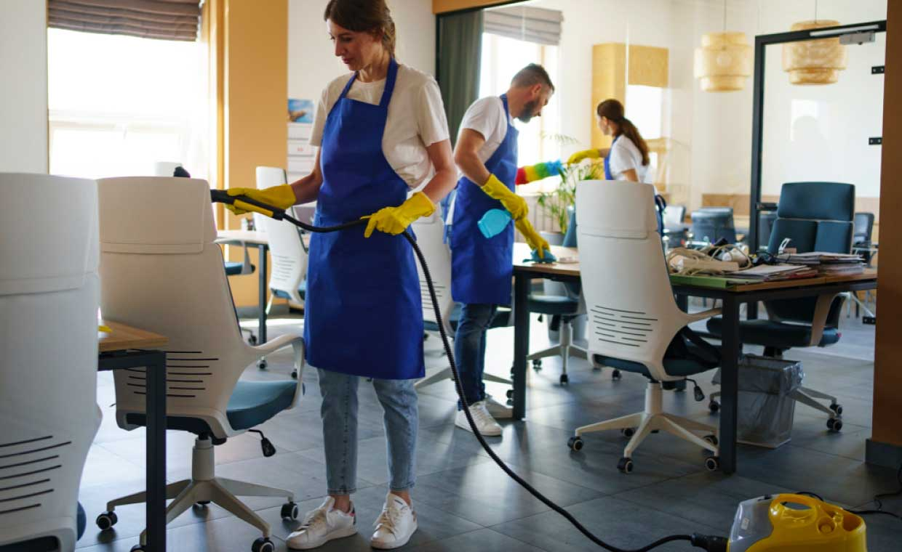
Úklid domu
Klikni pro více info
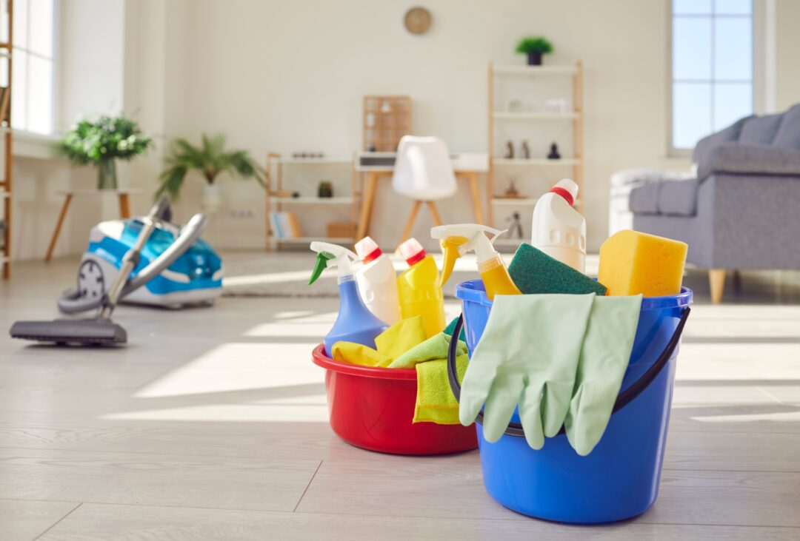
Úklid kanceláří pro frimu "NAZOV"
Klikni pro více info
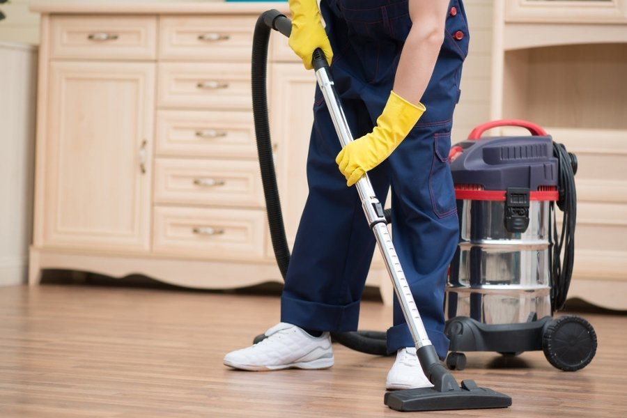
Desinfekce nemocnice v Brně
Klikni pro více info

Mytí farmy na solární panely
Klikni pro více info
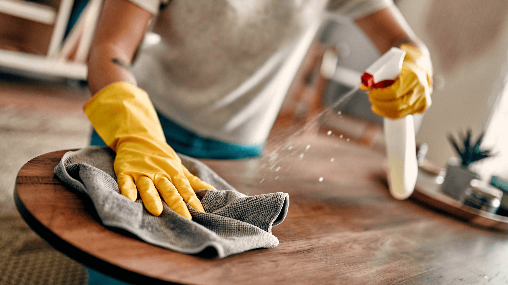
Čištení po rekonstrukci firmy "NAZOV"
Klikni pro více info
Profesionální úklid
domácností
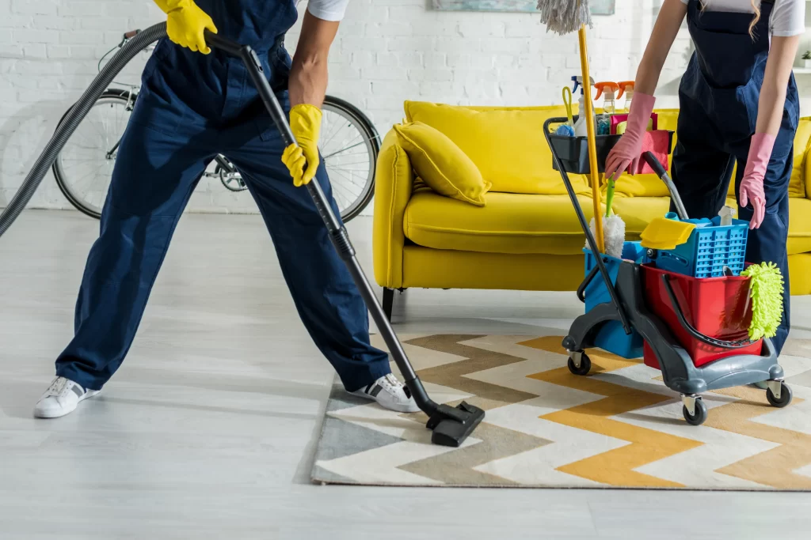
Udelejte si čas na rodinu a práci. Naše služba komplexního úklidu domácností zahrnuje veškeré činnosti potřebné k dokonalé čistotě vašeho domova. Používáme profesionální prostředky a moderní vybavení.
Co vše úklid domácností zahrnuje?
- Vysávání a mytí podlah (včetně parket, dlažeb, koberců)
- Důkladné čištění koupelen a WC
- Úklid kuchyně – sporák, dřez, pracovní desky, digestoř...
- Leštění zrcadel a skleněných ploch
- Utření prachu ze všech povrchů včetně lišt a rámů oken
- Vynesení košů a výměna pytlů
- Vyprášení polštářů, přehozů a čalouněného nábytku
- Úklid balkonu nebo terasy (podle dohody)
Četnost úklidu: po dohodě je možný pravidelný úklid
Dokonalý
úklid kanceláří
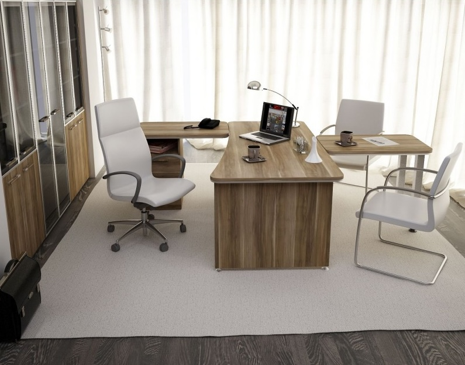
Udržujte své pracovní prostředí čisté a reprezentativní. Naše služba je určena pro malé firmy, korporace, coworkingová centra i státní instituce. Pracujeme mimo vaši pracovní dobu, abychom nenarušili chod společnosti.
Balíček základního úklidu kanceláří
- Vysávání koberců a mytí tvrdých podlah
- Utření prachu z pracovních stolů, parapetů a polic
- Vynesení košů a výměna odpadkových košů
- Dezinfekce a úklid sociálních zařízení
- Čištění židlí a sedaček
- Leštění nábytku a vitrin
- Doplnění toaletního papíru, mýdla a papírových ručníků
- Úklid serveroven a zasedacích místností
Flexibilní smlouvy: denní, týdenní, měsíční úklid nebo jednorázová hloubková očista. Vždy s garancí kvality a možností kontroly.
Dokonalý
úklid kanceláří
Udržujte své pracovní prostředí čisté a reprezentativní. Naše služba je určena pro malé firmy, korporace, coworkingová centra i státní instituce. Pracujeme mimo vaši pracovní dobu, abychom nenarušili chod společnosti.
Balíček základního úklidu kanceláří
- Vysávání koberců a mytí tvrdých podlah
- Utření prachu z pracovních stolů, parapetů a polic
- Vynesení košů a výměna odpadkových košů
- Dezinfekce a úklid sociálních zařízení
- Čištění židlí a sedaček
- Leštění nábytku a vitrin
- Doplnění toaletního papíru, mýdla a papírových ručníků
- Úklid serveroven a zasedacích místností
Flexibilní smlouvy: denní, týdenní, měsíční úklid nebo jednorázová hloubková očista. Vždy s garancí kvality a možností kontroly.
Dokonalý
úklid kanceláří
Udržujte své pracovní prostředí čisté a reprezentativní. Naše služba je určena pro malé firmy, korporace, coworkingová centra i státní instituce. Pracujeme mimo vaši pracovní dobu, abychom nenarušili chod společnosti.
Balíček základního úklidu kanceláří
- Vysávání koberců a mytí tvrdých podlah
- Utření prachu z pracovních stolů, parapetů a polic
- Vynesení košů a výměna odpadkových košů
- Dezinfekce a úklid sociálních zařízení
- Čištění židlí a sedaček
- Leštění nábytku a vitrin
- Doplnění toaletního papíru, mýdla a papírových ručníků
- Úklid serveroven a zasedacích místností
Flexibilní smlouvy: denní, týdenní, měsíční úklid nebo jednorázová hloubková očista. Vždy s garancí kvality a možností kontroly.
Dokonalý
úklid kanceláří
Udržujte své pracovní prostředí čisté a reprezentativní. Naše služba je určena pro malé firmy, korporace, coworkingová centra i státní instituce. Pracujeme mimo vaši pracovní dobu, abychom nenarušili chod společnosti.
Balíček základního úklidu kanceláří
- Vysávání koberců a mytí tvrdých podlah
- Utření prachu z pracovních stolů, parapetů a polic
- Vynesení košů a výměna odpadkových košů
- Dezinfekce a úklid sociálních zařízení
- Čištění židlí a sedaček
- Leštění nábytku a vitrin
- Doplnění toaletního papíru, mýdla a papírových ručníků
- Úklid serveroven a zasedacích místností
Flexibilní smlouvy: denní, týdenní, měsíční úklid nebo jednorázová hloubková očista. Vždy s garancí kvality a možností kontroly.
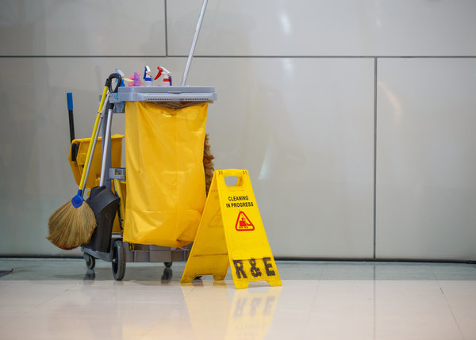

500+
spokojených zákazníků
15+
let na trhu
Váš partner pro
dokonalou čistotu
Úklidová firma NOJA byla založena současným majitelem firmy panem Jaroslavem Novákem v roce 1993. Od počátku jsme kladli důraz na kvalitu, profesionálnost a seriozní jednání, při realizaci našich zakázek. Prvním našim zákazníkem bylo zdravotnictví, kde jsme zaměstnávali až 70 pracovníků. Zde jsme získali nejvíce zkušeností z oblasti velice náročné na kvalitu (hygiena a pracovní postupy) a organizací práce, které využíváme dodnes.
Po roce 1996 jsme svou činnost rozšířili na veškeré úklidové práce, včetně veškerého servisu s tímto souvisejícího. Od roku 2005 se firma přeměnila na společnost s ručením omezeným. Jejím jediným jednatelem zůstal její zakladatel p. Jaroslav Novák.
Co od nás můžete očekávat:
- Pojištění odpovědnosti za škodu
- Profesionální čistící prostředky
- Flexibilní termíny dle vašich potřeb
- Garance kvality provedené práce
Komplexní řešení
pro každý prostor
Nabízíme širokou škálu profesionálních úklidových služeb přizpůsobených vašim potřebám.
Úklid domácností
Kompletní úklid vašeho domova včetně koupelen, kuchyní a obytných prostor.
Klikni pro více info
Úklid kanceláří
Pravidelný nebo jednorázový úklid kancelářských prostor a společných zón.
Klikni pro více info
Úklid po rekonstrukci
Odstranění stavebního prachu a nečistot po rekonstrukci nebo renovaci.
Klikni pro více info
Čištění koberců
Hloubkové čištění koberců a čalouněného nábytku s profesionální technikou.
Klikni pro více info
Mytí oken
Dokonale čistá okna bez šmouh a vodních skvrn pro váš domov i firmu.
Klikni pro více info
Úklid před/po stěhování
Kompletní úklid nemovitosti před nastěhováním nebo po vyklizení.
Klikni pro více info
Ekologický úklid
Využíváme šetrné a ekologické čistící prostředky bezpečné pro rodiny s dětmi.
Klikni pro více info
Dezinfekce prostor
Důkladná dezinfekce všech povrchů pro zdravé a hygienické prostředí.
Klikni pro více info
Mytí solárních kolektorů
Důkladné čištění solárních panelů pro všechny typy budov
Klikni pro více info
Nenašli jste přesně to, co hledáte?
Kontaktujte nás pro individuální řešení
Profesionální úklid
domácností
Udelejte si čas na rodinu a práci. Naše služba komplexního úklidu domácností zahrnuje veškeré činnosti potřebné k dokonalé čistotě vašeho domova. Používáme profesionální prostředky a moderní vybavení.
Co vše úklid domácností zahrnuje?
- Vysávání a mytí podlah (včetně parket, dlažeb, koberců)
- Důkladné čištění koupelen a WC
- Úklid kuchyně – sporák, dřez, pracovní desky, digestoř...
- Leštění zrcadel a skleněných ploch
- Utření prachu ze všech povrchů včetně lišt a rámů oken
- Vynesení košů a výměna pytlů
- Vyprášení polštářů, přehozů a čalouněného nábytku
- Úklid balkonu nebo terasy (podle dohody)
Četnost úklidu: po dohodě je možný pravidelný úklid
Dokonalý
úklid kanceláří
Udržujte své pracovní prostředí čisté a reprezentativní. Naše služba je určena pro malé firmy, korporace, coworkingová centra i státní instituce. Pracujeme mimo vaši pracovní dobu, abychom nenarušili chod společnosti.
Balíček základního úklidu kanceláří
- Vysávání koberců a mytí tvrdých podlah
- Utření prachu z pracovních stolů, parapetů a polic
- Vynesení košů a výměna odpadkových košů
- Dezinfekce a úklid sociálních zařízení
- Čištění židlí a sedaček
- Leštění nábytku a vitrin
- Doplnění toaletního papíru, mýdla a papírových ručníků
- Úklid serveroven a zasedacích místností
Flexibilní smlouvy: denní, týdenní, měsíční úklid nebo jednorázová hloubková očista. Vždy s garancí kvality a možností kontroly.
Důkladný úklid po
stavebních pracech
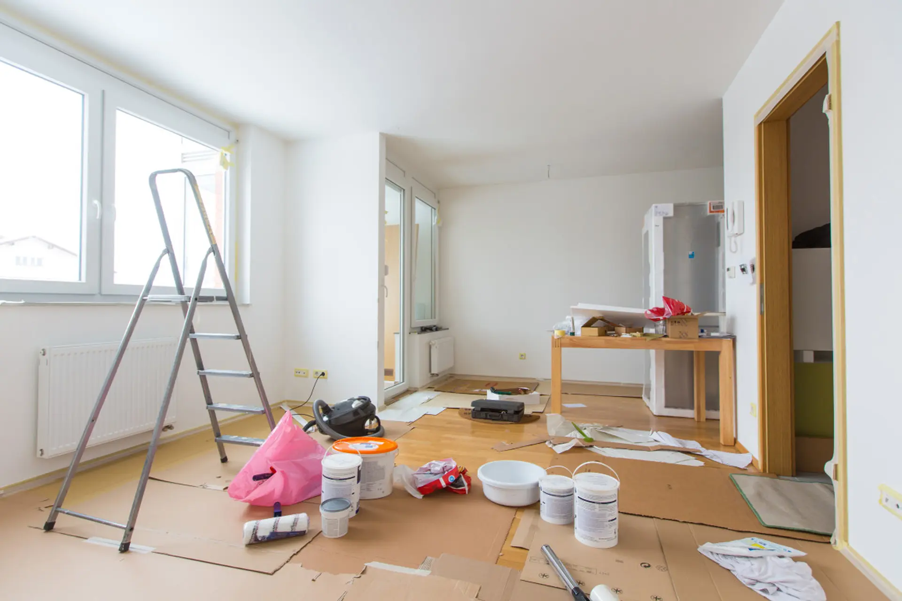
Rekonstrukce nebo novostavba zanechá spoustu jemného prachu, zbytků malty, lepidel a dalších nečistot. My zajistíme, aby prostor byl připraven k nastěhování nebo předání klientovi. Používáme průmyslové vysavače s HEPA filtrem pro zachycení nejjemnějších částic, parní čističe a profesionální čisticí prostředky. Po našem zásahu bude byt či dům vonět čistotou.
Co odstraňujeme?
- Jemný stavební prach ze všech povrchů včetně lišt, zásuvek a topidel
- Zaschlé kapky barev, lepidla, pěny z oken a dveří
- Zbytky malty a spárovací hmoty z dlažeb a obkladů
- Stavební smetí a úlomky (odnos na určené místo)
- Leštění oken, zrcadel a skleněných ploch bez šmouh
- Vysávání a mytí všech podlah
Cena se odvíjí od velikosti prostoru a míry znečištění. Vždy provádíme předem prohlídku a nabídneme přesnou kalkulaci.
Hloubkové čištění
koberců a čalounění
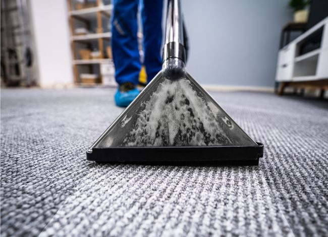
Koberce a čalouněný nábytek jsou lapače prachu, alergenů a skvrn. Naše profesionální extrakční čištění odstraní až 98 % nečistot bez použití agresivních chemikálií.
Metoda čištění – horká voda s extrakcí (HWE)
- Aplikace šetrného čisticího roztoku
- Vtírání do vláken kartáči
- Vypláchnutí horkou vodou pod tlakem
- Okamžité odsátí vody i s rozpuštěnými nečistotami
- Rychleschnutí (cca 2–4 hodiny)
Čistíme také kobercové podlahy v kancelářích, hotelech, restauracích a autosedačky. Na přání použijeme prostředky vhodné pro alergiky.
Dokonalé mytí oken
bez šmouh
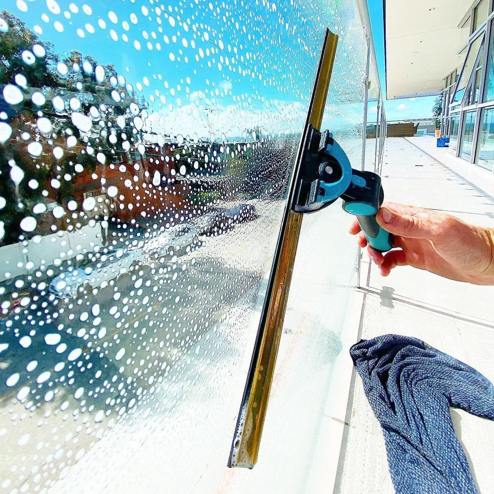
Čistá okna propustí více světla a zlepší vzhled vašeho domu či firmy. Používáme profesionální teleskopické tyče a technologii reverse-osmózy, díky které nezanecháváme žádné vodní skvrny.
Naše služba mytí oken zahrnuje:
- Mytí skleněných tabulí zevnitř i zvenku (přístupné okna do 2. patra bez lešení – výšky řešíme výsuvnými tyčemi)
- Čištění rámů a parapetů
- Leštění skel bez šmouh
- Mytí okenních sítí (vyklepání, opláchnutí)
Frekvence mytí doporučujeme 2x ročně (jaro a podzim). Zajistíme i jednorázový termín dle vašich požadavků.
Úklid před nebo
po stěhování
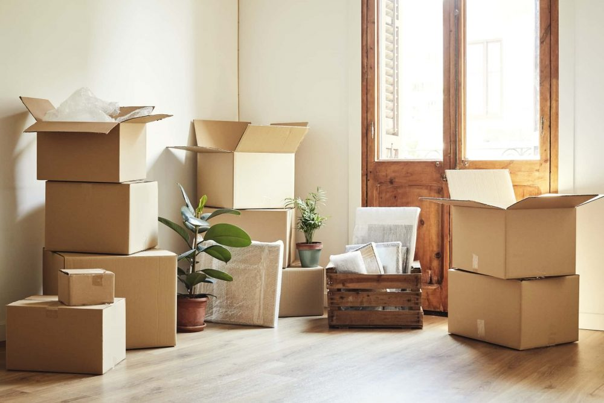
Chcete předat byt v perfektním stavu? Nebo se chcete nastěhovat do čistého prostoru? Naše služba je určena pronajímatelům, realitkám, nájemníkům i novým majitelům.
Co vše vyčistíme
- Kompletní úklid všech místností (podlahy, stěny, dveře, skříně)
- Kuchyň – odmaštění sporáku, trouby, digestoře, dřezu
- Koupelna + WC – odstranění vodního kamene a dezinfekce
- Vnitřní okna a parapety
- Vytopení radiátorů a topných těles
- Vysátí a vyklepání skříní a zásuvek
- Odstranění pavučin a prachu z rohů stropů
Garantujeme vrácení kauce nebo bezproblémové předání. Pracujeme rychle a spolehlivě.
Úklid šetrný k přírodě i
vašemu zdraví
Pro klienty, kterým záleží na životním prostředí, alergiky, rodiny s malými dětmi nebo domácími mazlíčky, nabízíme ekologický úklid bez agresivních chemikálií.
Používáme certifikované prostředky:
- Na bázi enzymů, rostlinných tenzidů a éterických olejů
- Žádné fosfáty, chlór, parabeny ani umělá barviva
- Všechny prostředky jsou plně biologicky odbouratelné
- Vysavače s HEPA filtrem (zachytí alergeny a jemný prach)
- Mikrovláknové hadříky (mechanické odstranění nečistot bez chemie)
- Parní čištění (voda přeměněná na páru pod tlakem – dezinfikuje bez chemie)
Ekologický úklid poskytujeme stejně důkladně jako klasický. Vaše domácnost bude svěží a bezpečná.
Profesionální dezinfekce
všech povrchů
Zvyšte hygienický standard vaší domácnosti, firmy nebo provozovny. Naše dezinfekční služba eliminuje bakterie, viry, plísně a další patogeny.
Kde provádíme dezinfekci
- Koupelny, WC, sprchové kouty
- Kuchyňské linky, dřezy, pracovní desky
- Kancelářské plochy, klávesnice, myši, telefony
- Společenské místnosti, tělocvičny, fitness centra
- Čekárny, ordinace, masérské salony
- Prostory po nemoci (chřipka, covid, plísně)
Po zásahu je prostor bezpečný pro lidi i zvířata. Vydáváme potvrzení o provedené dezinfekci.
Kvalitní čištění
solárních panelů
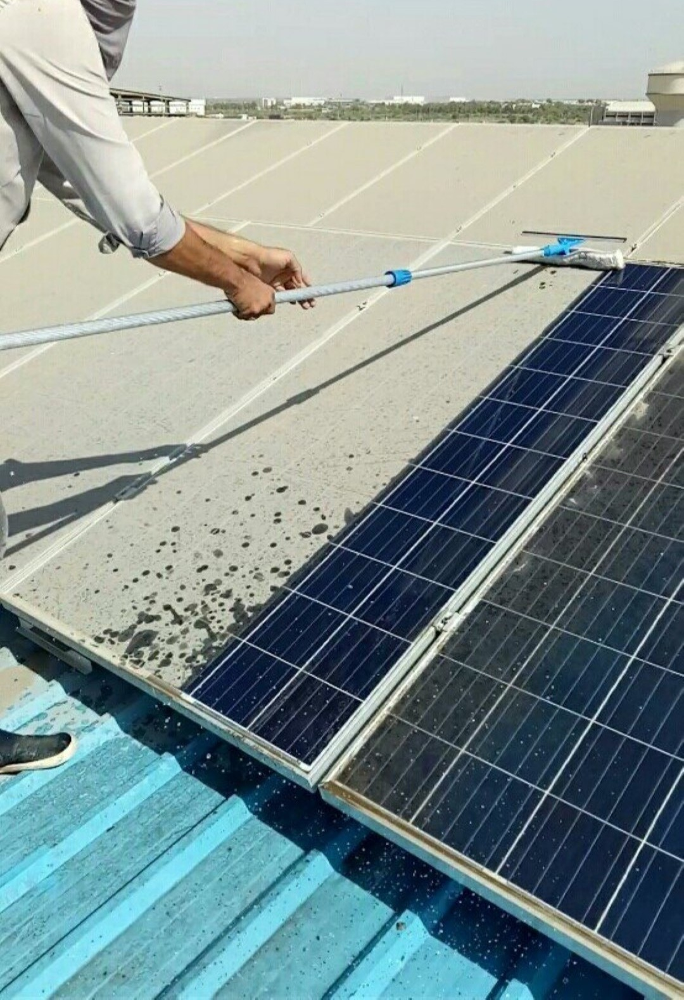
Špinavé solární panely ztrácejí až 20 % účinnosti. Naše služba důkladného čištění obnoví jejich výkon a prodlouží životnost. Platí pro fotovoltaické i termické solární systémy.
Co zahrnuje čištění solárních kolektorů?
- Odstranění ptačího trusu, pylu, prachu, sazí a lišejníků
- Mytí demineralizovanou vodou (nezanechává vodní kámen a skvrny)
- Použití speciálních kartáčů pro sklo panelů (nepoškrábou)
- Kontrola stavu panelů a kabeláže
- Měření výkonu před a po čištění na přání
Čistíme bezpečně, často bez nutnosti lešení (teleskopické tyče). Doporučená frekvence: 2x ročně (jaro a po podzimním opadu listí). Po domluvě zajistíme i pravidelný servis každé 3 měsíce.
Nejlepší ceny
bez skrytých poplatků
Naše ceny jsou orientační. Finální kalkulaci vytvoříme na míru vašim potřebám po nezávazné konzultaci.
| Úklid domácností | |
|---|---|
| Běžný úklid bytu | 150 Kč/hod |
| cca 3 hodiny | |
| Pravidelný úklid domácnosti | 100 Kč/hod |
| cca 4 hodiny | |
| Čištění koberců a čalounění | 20 Kč/m² |
| cca 3 hodiny | |
| Mytí oken | 15 Kč/m² |
| cca 2 hodiny | |
| Jiné služby | |
|---|---|
| Úklid kanceláře | od 0,55 Kč/m² |
| jednorázově | |
| Mytí solárních kolektorů | od 3 Kč/m² |
| cca 7 hodin | |
| Čištění horizontálních žaluzií | 20 Kč/m² |
| cca 5 hodin | |
| Čištění vertikálních žaluzií | 100 Kč/m² |
| cca 6 hodiny | |
Doplňkové služby
Čištění koberců a čalounění
s možností desinfekce
20 Kč/m²
Strojové čištění jakéhokoliv
typu podlah
od 5 Kč/m²
Zametání chodníků s odklízením
sněhu a posypem
od 3,5 Kč/m² (mesačne)
Čištění a ochranný nátěr přírodního
lina "Marmoleum"
od 40 Kč/m² (mesačne)
Potřebujete přesnou cenovou nabídku?
Každý prostor je jedinečný. Rádi k vám přijedeme, prohlédneme si prostor a vytvoříme nabídku přesně na míru vašim potřebám. Konzultace je zdarma a zcela nezávazná.
Chci nezávaznou nabídkuCo říkají naši
spokojení klienti
Důvěřuje nám přes 500 spokojených zákazníků z celé České republiky.
"S firmou NOJA spolupracuji už 3 roky a jsem naprosto spokojená. Úklid je vždy perfektní. Mohu jen doporučit!"
Jmeno
Popis
"Používáme služby NOJA pro úklid našich kanceláří. Profesionální přístup, flexibilita a kvalita práce nás zcela přesvědčily. Doporučujeme všem!"
Jmeno
Popis
"Po rekonstrukci našeho domu jsme potřebovali důkladný úklid. NOJA odvedla skvělou práci, dům zářil čistotou. Určitě je budeme kontaktovat i v budoucnu."
Jmeno
Popis
"Výborná komunikace, spolehlivost a především kvalita. NOJA se stará o úklid naší restaurace a jsme s jejich službami velmi spokojeni."
Jmeno
Popis
"Potřebovala jsem rychlý a kvalitní úklid mezi jednotlivými hosty. NOJA vždy dorazí včas a apartmány jsou dokonale připravené pro další hosty."
Jmeno
Popis
"Čistota je v našem fitness centru naprosto zásadní. NOJA zajišťuje pravidelný úklid s perfektními výsledky. Jejich profesionalita je na vysoké úrovni."
Jmeno
Popis
Pojďme začít
s vaším úklidem
Kontaktujte nás pro nezávaznou cenovou nabídku. Rádi odpovíme na všechny vaše dotazy.
Telefon
+420 999 999 999Adresa
Faměrovo náměstí 40
618 00, Brno
Pracovní doba
Po - Pá: 7:00 - 18:00
So - Ne: zavřeno